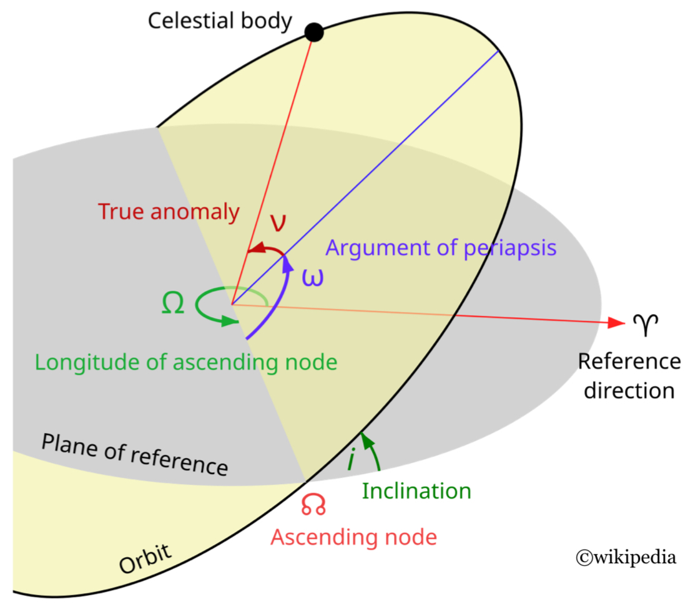

Minimum time orbit transfer
Introduction
Minimum time control of the Kepler equation (CNES / TAS / Inria / CNRS collaboration, check [1] and [2]):
\[\begin{cases} t_f \to \min,\\ \ddot{q} = -\mu\frac{q}{|q|^3} + \frac{u}{m}\,,\quad t \in [0,t_f],\\ \dot{m} = -\beta|u|,\quad |u| \leq T_{\mathrm{max}}. \end{cases}\]
Fixed initial and final Keplerian orbits (free final longitude).
using OptimalControl
using NLPModelsIpopt
using OrdinaryDiffEq
using Plots
using MINPACK
using ForwardDiff
using LinearAlgebraProblem definition
Tmax = 60 # Maximum thrust in Newtons
cTmax = 3600^2 / 1e6; T = Tmax * cTmax # Conversion from Newtons to kg x Mm / h²
mass0 = 1500 # Initial mass of the spacecraft
β = 1.42e-02 # Engine specific impulsion
μ = 5165.8620912 # Earth gravitation constant
P0 = 11.625 # Initial semilatus rectum
ex0, ey0 = 0.75, 0 # Initial eccentricity
hx0, hy0 = 6.12e-2, 0 # Initial ascending node and inclination
L0 = π # Initial longitude
Pf = 42.165 # Final semilatus rectum
exf, eyf = 0, 0 # Final eccentricity
hxf, hyf = 0, 0 # Final ascending node and inclination
asqrt(x; ε=1e-9) = sqrt(sqrt(x^2+ε^2)) # Avoid issues with AD
function F0(x)
P, ex, ey, hx, hy, L = x
pdm = asqrt(P / μ)
cl = cos(L)
sl = sin(L)
w = 1 + ex * cl + ey * sl
F = zeros(eltype(x), 6) # Use eltype to allow overloading for AD
F[6] = w^2 / (P * pdm)
return F
end
function F1(x)
P, ex, ey, hx, hy, L = x
pdm = asqrt(P / μ)
cl = cos(L)
sl = sin(L)
F = zeros(eltype(x), 6)
F[2] = pdm * sl
F[3] = pdm * (-cl)
return F
end
function F2(x)
P, ex, ey, hx, hy, L = x
pdm = asqrt(P / μ)
cl = cos(L)
sl = sin(L)
w = 1 + ex * cl + ey * sl
F = zeros(eltype(x), 6)
F[1] = pdm * 2 * P / w
F[2] = pdm * (cl + (ex + cl) / w)
F[3] = pdm * (sl + (ey + sl) / w)
return F
end
function F3(x)
P, ex, ey, hx, hy, L = x
pdm = asqrt(P / μ)
cl = cos(L)
sl = sin(L)
w = 1 + ex * cl + ey * sl
pdmw = pdm / w
zz = hx * sl - hy * cl
uh = (1 + hx^2 + hy^2) / 2
F = zeros(eltype(x), 6)
F[2] = pdmw * (-zz * ey)
F[3] = pdmw * zz * ex
F[4] = pdmw * uh * cl
F[5] = pdmw * uh * sl
F[6] = pdmw * zz
return F
endDirect solve
tf = 15 # Estimation of final time
Lf = 3π # Estimation of final longitude
x0 = [P0, ex0, ey0, hx0, hy0, L0] # Initial state
xf = [Pf, exf, eyf, hxf, hyf, Lf] # Final state
x(t) = x0 + (xf - x0) * t / tf # Linear interpolation
u(t) = [0.1, 0.5, 0.] # Initial guess for the control
nlp_init = (state=x, control=u, variable=tf) # Initial guess for the NLP
@def ocp begin
tf ∈ R, variable
t ∈ [0, tf], time
x = (P, ex, ey, hx, hy, L) ∈ R⁶, state
u ∈ R³, control
x(0) == x0
x[1:5](tf) == xf[1:5]
mass = mass0 - β * T * t
ẋ(t) == F0(x(t)) + T / mass * (u₁(t) * F1(x(t)) + u₂(t) * F2(x(t)) + u₃(t) * F3(x(t)))
u₁(t)^2 + u₂(t)^2 + u₃(t)^2 ≤ 1
tf → min
endThe (non autonomous) optimal control problem is given by:
tf ∈ R, variable
t ∈ [0, tf], time
x = ((P, ex, ey, hx, hy, L) ∈ R⁶, state)
u ∈ R³, control
x(0) == x0
(x[1:5])(tf) == xf[1:5]
mass = mass0 - β * T * t
ẋ(t) == F0(x(t)) + (T / mass) * (u₁(t) * F1(x(t)) + u₂(t) * F2(x(t)) + u₃(t) * F3(x(t)))
u₁(t) ^ 2 + u₂(t) ^ 2 + u₃(t) ^ 2 ≤ 1
tf → min
The (non autonomous) optimal control problem is of the form:
minimize J(x, u, tf) = g(x(0), x(tf), tf)
subject to
ẋ(t) = f(t, x(t), u(t), tf), t in [0, tf] a.e.,
ξl ≤ ξ(t, u(t), tf) ≤ ξu,
ϕl ≤ ϕ(x(0), x(tf), tf) ≤ ϕu,
where x(t) = (P(t), ex(t), ey(t), hx(t), hy(t), L(t)) ∈ R⁶, u(t) ∈ R³ and tf ∈ R.
Declarations (* required):
╭────────┬────────┬──────────┬──────────┬───────────┬────────────┬─────────────╮
│ times* │ state* │ control* │ variable │ dynamics* │ objective* │ constraints │
├────────┼────────┼──────────┼──────────┼───────────┼────────────┼─────────────┤
│ V │ V │ V │ V │ V │ V │ V │
╰────────┴────────┴──────────┴──────────┴───────────┴────────────┴─────────────╯
nlp_sol = OptimalControl.solve(ocp; init=nlp_init, grid_size=100)This is Ipopt version 3.14.16, running with linear solver MUMPS 5.7.3.
Number of nonzeros in equality constraint Jacobian...: 11011
Number of nonzeros in inequality constraint Jacobian.: 303
Number of nonzeros in Lagrangian Hessian.............: 4445
Total number of variables............................: 910
variables with only lower bounds: 0
variables with lower and upper bounds: 0
variables with only upper bounds: 0
Total number of equality constraints.................: 611
Total number of inequality constraints...............: 101
inequality constraints with only lower bounds: 0
inequality constraints with lower and upper bounds: 0
inequality constraints with only upper bounds: 101
iter objective inf_pr inf_du lg(mu) ||d|| lg(rg) alpha_du alpha_pr ls
0 1.5000000e+01 2.14e-01 2.46e-01 0.0 0.00e+00 - 0.00e+00 0.00e+00 0
1 1.5632877e+01 1.73e-01 6.59e-01 -6.1 7.27e+00 - 5.95e-01 1.90e-01h 3
2 1.6096872e+01 1.51e-01 1.15e+00 -6.4 3.71e+00 0.0 4.78e-01 1.25e-01h 4
3 1.9018883e+01 6.12e-02 2.70e+00 -1.1 3.97e+00 -0.5 7.39e-01 6.03e-01H 1
4 2.0358419e+01 1.56e-02 1.98e+00 -1.7 1.60e+00 -0.1 1.00e+00 8.38e-01h 1
5 2.0617233e+01 2.68e-04 4.98e-01 -3.6 2.59e-01 0.4 1.00e+00 1.00e+00h 1
6 2.0429778e+01 3.01e-04 1.53e-01 -3.7 1.87e-01 -0.1 1.00e+00 1.00e+00h 1
7 1.9857419e+01 2.52e-03 1.52e-01 -4.6 5.72e-01 -0.6 1.00e+00 1.00e+00f 1
8 1.9319499e+01 5.35e-03 1.22e-01 -2.7 1.03e+00 -1.1 1.00e+00 5.20e-01f 1
9 1.8399038e+01 4.64e-02 7.26e-02 -2.4 1.40e+00 -1.5 1.00e+00 6.59e-01f 1
iter objective inf_pr inf_du lg(mu) ||d|| lg(rg) alpha_du alpha_pr ls
10 1.7193105e+01 3.05e+00 2.62e-01 -2.1 3.01e+00 -2.0 1.00e+00 8.31e-01f 1
11 1.5106279e+01 1.10e+01 3.82e-01 -2.2 1.36e+01 -2.5 1.70e-01 3.23e-01h 1
12 1.5675085e+01 2.15e+00 2.08e-01 -2.2 1.62e+00 -1.2 7.98e-01 1.00e+00h 1
13 1.5767117e+01 1.59e-01 7.09e-02 -2.2 7.59e-01 -0.7 1.00e+00 1.00e+00h 1
14 1.5167619e+01 5.39e-01 1.06e-01 -1.9 6.62e+00 - 1.00e+00 4.46e-01h 1
15 1.5207976e+01 1.55e-01 2.60e-01 -2.2 1.87e+00 - 1.00e+00 7.88e-01h 1
16 1.4958081e+01 2.78e-02 2.02e-02 -4.0 4.59e-01 - 1.00e+00 9.93e-01h 1
17 1.5012097e+01 4.19e-01 7.47e-03 -2.5 6.61e-01 - 1.00e+00 9.34e-01h 1
18 1.4993570e+01 2.41e-04 5.76e-04 -2.7 3.51e-01 - 1.00e+00 1.00e+00h 1
19 1.4814517e+01 9.34e-04 3.26e-03 -8.7 2.05e-01 - 1.00e+00 1.00e+00h 1
iter objective inf_pr inf_du lg(mu) ||d|| lg(rg) alpha_du alpha_pr ls
20 1.4796807e+01 5.17e-04 5.95e-05 -5.1 6.84e-02 - 1.00e+00 1.00e+00h 1
21 1.4796405e+01 1.26e-07 1.37e-08 -11.0 1.93e-03 - 1.00e+00 1.00e+00h 1
22 1.4796405e+01 1.42e-14 1.53e-14 -11.0 2.11e-06 - 1.00e+00 1.00e+00h 1
Number of Iterations....: 22
(scaled) (unscaled)
Objective...............: 1.4796404502710015e+01 1.4796404502710015e+01
Dual infeasibility......: 1.5265566588595902e-14 1.5265566588595902e-14
Constraint violation....: 1.4210854715202004e-14 1.4210854715202004e-14
Variable bound violation: 0.0000000000000000e+00 0.0000000000000000e+00
Complementarity.........: 1.0004070416573195e-11 1.0004070416573195e-11
Overall NLP error.......: 1.0004070416573195e-11 1.0004070416573195e-11
Number of objective function evaluations = 34
Number of objective gradient evaluations = 23
Number of equality constraint evaluations = 34
Number of inequality constraint evaluations = 34
Number of equality constraint Jacobian evaluations = 23
Number of inequality constraint Jacobian evaluations = 23
Number of Lagrangian Hessian evaluations = 22
Total seconds in IPOPT = 4.087
EXIT: Optimal Solution Found.tf = nlp_sol.variable
p0 = nlp_sol.costate(0)
plot(nlp_sol)Shooting (1/2), Tmax = 60 Newtons
function ur(t, x, p, tf) # Regular maximising control
H1 = p' * F1(x)
H2 = p' * F2(x)
H3 = p' * F3(x)
u = [H1, H2, H3]
u = u / sqrt(u[1]^2 + u[2]^2 + u[3]^2)
return u
end
fr = Flow(ocp, ur) # Regular flow (first version)
function shoot(ξ::Vector{T}) where T
tf, p0 = ξ[1], ξ[2:end]
xf_, pf = fr(0, x0, p0, tf)
s = zeros(T, 7)
s[1:5] = xf_[1:5] - xf[1:5]
s[6] = pf[6]
s[7] = p0[1]^2 + p0[2]^2 + p0[3]^2 + p0[4]^2 + p0[5]^2 + p0[6]^2 - 1
return s
end
p0 = p0 / norm(p0) # Normalization |p0|=1 for free final time
ξ = [tf; p0]; # Initial guess
jshoot(ξ) = ForwardDiff.jacobian(shoot, ξ)
shoot!(s, ξ) = (s[:] = shoot(ξ); nothing)
jshoot!(js, ξ) = (js[:] = jshoot(ξ); nothing)
bvp_sol = fsolve(shoot!, jshoot!, ξ; show_trace=true); println(bvp_sol)Iter f(x) inf-norm Step 2-norm Step time
------ -------------- -------------- --------------
1 1.441506e+00 0.000000e+00 11.345016
2 7.828938e-02 5.822027e-05 12.627881
3 1.805662e-02 1.793354e-05 0.009307
4 4.039662e-03 6.128462e-07 0.018665
5 1.137949e-04 1.107466e-08 0.021940
6 6.538025e-05 1.358877e-10 0.008461
7 6.246359e-06 4.488870e-12 0.016674
8 3.534277e-08 5.344945e-14 0.029091
9 3.607425e-10 1.853529e-18 0.008519
Results of Nonlinear Solver Algorithm
* Algorithm: Modified Powell (User Jac, Expert)
* Starting Point: [14.796404502710015, -0.01616443538965085, -0.9050962202930849, -0.33067877687115305, -0.09648290171205924, 0.03514811057836573, 0.2462656077626256]
* Zero: [14.80036435466474, -0.016189714921626987, -0.9084889547974427, -0.32525985898304344, -0.09447217088704477, 0.034322962835424624, 0.24184432891069796]
* Inf-norm of residuals: 0.000000
* Convergence: true
* Message: algorithm estimates that the relative error between x and the solution is at most tol
* Total time: 24.085602 seconds
* Function Calls: 9
* Jacobian Calls (df/dx): 1Shooting (2/2), Tmax = 0.7 Newtons
hr = (t, x, p) -> begin # Regular maximised Hamiltonian (more efficient)
H0 = p' * F0(x)
H1 = p' * F1(x)
H2 = p' * F2(x)
H3 = p' * F3(x)
mass = mass0 - β*T*t
h = H0 + T / mass * sqrt(H1^2 + H2^2 + H3^2)
return h
end
hr = Hamiltonian(hr; autonomous=false)
fr = Flow(hr) # Regular flow (again)
Tmax = 0.7 # Maximum thrust (Newtons)
cTmax = 3600^2 / 1e6; T = Tmax * cTmax # Conversion from Newtons to kg x Mm / h²
tf = 1.210e3; p0 =-[-2.215319700438820e+01, -4.347109477345140e+01, 9.613188807286992e-01, 3.181800985503019e+02, -2.307236094862410e+00, -5.797863110671591e-01] # Tmax = 0.7 Newtons
p0 = p0 / norm(p0) # Normalization |p0|=1 for free final time
ξ = [tf; p0]; # Initial guess
bvp_sol = fsolve(shoot!, jshoot!, ξ; show_trace=true); println(bvp_sol)Iter f(x) inf-norm Step 2-norm Step time
------ -------------- -------------- --------------
1 1.073118e+00 0.000000e+00 3.768412
2 1.431619e-01 1.222060e+01 10.059981
3 1.090263e-01 1.104500e+01 0.272407
4 1.847681e-02 2.971575e+00 0.264620
5 1.996342e-02 4.468500e-01 0.278285
6 8.607891e-03 2.181855e-02 0.229607
7 2.826179e-03 2.618597e-03 0.258233
8 1.241800e-03 7.994152e-05 0.259598
9 1.554855e-03 6.600726e-05 0.266400
10 7.600283e-05 2.807880e-05 0.265530
11 4.206208e-05 1.772950e-07 0.268288
12 7.673255e-06 3.854864e-07 0.217403
13 5.197705e-07 7.297650e-09 0.268298
14 5.438044e-08 4.529607e-11 0.277777
15 1.587843e-08 5.299562e-13 0.277078
Results of Nonlinear Solver Algorithm
* Algorithm: Modified Powell (User Jac, Expert)
* Starting Point: [1210.0, 0.06881811251625697, 0.13504139789537645, -0.0029863026489984875, -0.9884150724670144, 0.007167346236588738, 0.001801085395597836]
* Zero: [1214.5922197498583, 0.06933409679970054, 0.5161919907114219, -0.0002316694508574345, -0.8536506987915817, 0.004363237319529891, -9.327824976827161e-5]
* Inf-norm of residuals: 0.000000
* Convergence: true
* Message: algorithm estimates that the relative error between x and the solution is at most tol
* Total time: 17.232007 seconds
* Function Calls: 15
* Jacobian Calls (df/dx): 1Plots
tf = bvp_sol.x[1]
p0 = bvp_sol.x[2:end]
ode_sol = fr((0, tf), x0, p0)
t = ode_sol.t; N = size(t, 1)
P = ode_sol[1, :]
ex = ode_sol[2, :]
ey = ode_sol[3, :]
hx = ode_sol[4, :]
hy = ode_sol[5, :]
L = ode_sol[6, :]
cL = cos.(L)
sL = sin.(L)
w = @. 1 + ex * cL + ey * sL
Z = @. hx * sL - hy * cL
C = @. 1 + hx^2 + hy^2
q1 = @. P *((1 + hx^2 - hy^2) * cL + 2 * hx * hy * sL) / (C * w)
q2 = @. P *((1 - hx^2 + hy^2) * sL + 2 * hx * hy * cL) / (C * w)
q3 = @. 2 * P * Z / (C * w)
plt1 = plot3d(1; xlim = (-60, 60), ylim = (-60, 60), zlim = (-5, 5), title = "Orbit transfer", legend=false)
@gif for i = 1:N
push!(plt1, q1[i], q2[i], q3[i])
end every N ÷ min(N, 100)Dependencies
All the numerical simulations to generate this documentation are performed with the following packages.
using Pkg
Pkg.status()Status `~/work/kepler/kepler/docs/Project.toml`
[e30172f5] Documenter v1.6.0
[f6369f11] ForwardDiff v0.10.36
[459d104a] Kepler v0.1.5 `~/work/kepler/kepler`
⌃ [4854310b] MINPACK v1.2.0
[f4238b75] NLPModelsIpopt v0.10.2
⌅ [5f98b655] OptimalControl v0.11.4
[1dea7af3] OrdinaryDiffEq v6.89.0
[91a5bcdd] Plots v1.40.8
[37e2e46d] LinearAlgebra
Info Packages marked with ⌃ and ⌅ have new versions available. Those with ⌃ may be upgradable, but those with ⌅ are restricted by compatibility constraints from upgrading. To see why use `status --outdated`References
- 1Bonnard, B.; Caillau, J.-B.; Trélat, E. Geometric optimal control of elliptic Keplerian orbits. Discrete Contin. Dyn. Syst. Ser. B 5 (2005), no. 4, 929-956.
- 2Caillau, J.-B.; Gergaud, J.; Noailles, J. 3D Geosynchronous Transfer of a Satellite: continuation on the Thrust. J. Optim. Theory Appl. 118 (2003), no. 3, 541-565.